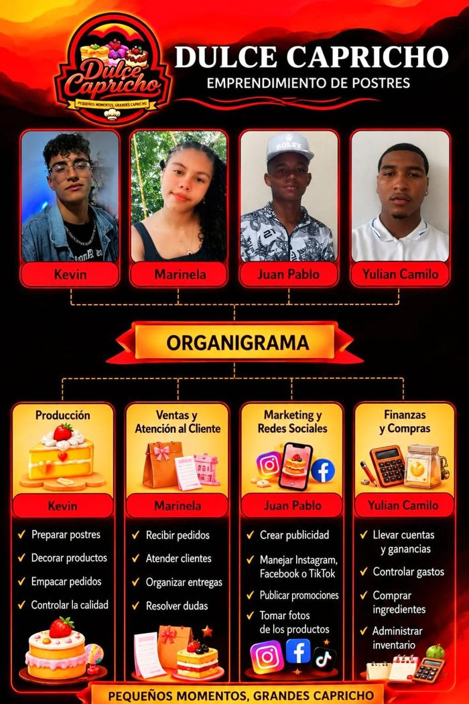

Mousse artesanal de maracuyá, mora y Milo, preparados con ingredientes frescos y mucho amor. Proyecto productivo del programa Técnico en Integración de Contenidos Digitales.
💬 Pedir por WhatsApp 📸 Instagram Ver postresLo que somos y lo que soñamos
Elaborar postres artesanales de alta calidad que alegren los momentos especiales de nuestros clientes, ofreciendo productos deliciosos, creativos y preparados con amor.
Ser una empresa reconocida en Antioquia por la calidad, innovación y excelente servicio, convirtiéndonos en una de las marcas de postres preferidas.
Los tres vasos simbolizan los sabores de la marca; el arco de colores, la alegría y diversidad; el gorro de chef, el compromiso con lo artesanal, la higiene y la calidad.
Amarillo: maracuyá
Morado: mora
Marrón: Milo
Rojo: pasión y energía
“Pequeños caprichos, grandes momentos”: un pequeño antojo tiene el poder de hacer especial un cumpleaños, una reunión o simplemente un momento para consentirse.
Mira nuestro anuncio
Nuestra mascota, el zorro chef, presenta los postres que preparamos con amor para consentirte.
Cuatro aprendices, cuatro áreas, un mismo capricho
